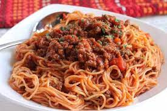

Spaghetti With Ground Beef

Description
This recipe has been handed down from my mother.
It is a family favorite and will not be replaced!
(Definite husband pleaser!) Serve over any variety of hot cooked pasta.
Ingredients Needed For 3 Servings
- 1 pound ground beef
- 1 medium onion chopped
- 4 clover garlic, minced
- 1 small green bell pepper, diced
- 1 (28 ounce) can diced tomatoes
- 1 (16 ounce) can tomato sauce
- 1 (6 ounce) can tomato paste
- 2 teaspoons dried oregano
- 2 teaspoons dried basil
- 1 teaspoon salt
- ½ teaspoon ground
Steps
- Combine ground beef, onion, garlic, and green pepper in a large saucepan over medium-high heat. Cook and stir until meat is browned and crumbly and vegetables are tender, 5 to 7 minutes. Drain grease.
- Stir diced tomatoes, tomato sauce, and tomato paste into the pan. Season with oregano, basil, salt, and pepper. Simmer spaghetti sauce for 1 hour, stirring occasionally.